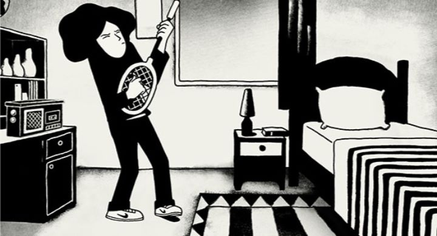

When "Persepolis" was released, it seemed to be the indie darling of the animation world in 2007. It was heavily promoted by American indie distributor "Sony Pictures Classics," nominated for awards everywhere, and eventually became a commonly seen film on television through educational networks like PBS and TVO. Films about Iran were scarce at this time, as it was only six years after the terrorist attacks on 9/11, and most of the Western world still had low opinions of the entirety of the Middle-East. I was a child at the time, and didn't know the difference between Iran or Iraq. This wouldn't be the last attempt to educate the ignorant either: the Oscar-nominated animated film "Waltz With Bashir" would be released only a year later. Anyway, "Persepolis" stood out, both for its setting, its honest depiction of a woman's life growing up in that (fairly recent) period, and for its distinctively simple black-and-white art style. I am slightly embarressed that I never got around to watching the film from start to finish until about a decade after its initial release, but I finally got around to it.Based off of the autobiographical graphic novel of the same name, the film is played like an auto-biography, showcasing the life and upbringing of Marjane Satrapi in the late 20th century. As a child living in an apartment complex with her family, she overhears the adults talking about a citizen-led revolution against the Shah, then lives in fear of violence outside her home as the nation's politics gets complicated. The laws and religous views of the city seem to change overnight, with Marjane and her friends not taking it seriously when authorities aren't watching. Eventually, Marjane's family insists she leave the country, so she goes to a school in Austria, alone in unfamiliar territory, dealing with puberty, and with the social stigma of belonging to a nationality outsiders look down upon. It's a powerful and honest experience. The film tries to explain the political situaiton through the eyes of a young Marjane, and perhaps it oversimplifies it, but we understand exactly what Marjane must have felt as a ten-year-old child. Which is to say, she knew these were serious times, but didn't fully grasp the meaning of it all at the time. Much of the film's humor (yes, it is quite funny) comes from Marjane and her friends misinterpretting what the adults say, marching and playing games in her living room, and occasionally having one-on-one conversations with God from a child's perspective. She also meets relatives she never knew about, learns they were wrongfully imprisioned for a long time, then joins her friends while they brag about who was a political prisoner for the longest. Some adults are taken back to prison, and Marjane has to deal with death to her family, and later to neighbors caught in missile strikes on the same block as her home. Growing up, Marjane continues to have a rebellious spirit, making fun of or speaking out against clothing restrictions against women. Eventually, she becomes a teenager, and in a inspired scene we see her body change, and she begins to have relationships with boys, most of whom break her heart, an experience most teenagers understand.This is a wide range of conflicting emotions the film tries to portray, and while it isn't as detailed as it ought to be, it feels honest, thanks to the character of Marjane. She is expressive and multi-dimensional, and easy to understand no matter what background the viewer may be. If she didn't exist in the movie... well, it would be a very boring and empty movie. Biographies in general are hard to make entertaining, especially when the subject matter is supposed to be so serious. The story really isn't a story, its just a chain of events to give a sense of place. For educational and cultural insight, "Persepolis" is an important film to see, but otherwise I would understand if someone didn't care much for it. The art style plays a part in the attachment I have to the film. The black-and-white flash-animation style is perhaps too much like the original graphic novel, and I could tell the team was deliberately holding back from making scenes that gave the animation too much focus. On the other hand, that color scheme and the character designs are memorable and unique, such that any single screenshot could only be paired with this movie and nothing else. There is an English dub on the Bluray disc in America, but by default it goes to French, which is probably wise; the English dub is poor despite the cast, and the original French voices in comparison are much stronger (although I never pictured Iranian citizens speaking French as their first language). Also, there is a strange blurring effect between animation frames on the Bluray... I couldn't tell if it was a mastering error, my TV's fault, or a deliberate attempt to smooth animation by the filmmakers. Either way, its subtle, but almost ruins the experience for me.You have to be of a certain mind or have an invested interest in the Middle-East to get the most out of "Persepolis." Generally, I can see why it would work well as a graphic novel to read in a quiet afternoon, and it doesn't apply as well to animation, And yet, it remains a prime example of good international animation from the 21st century, and remains memorable to anyone that comes across it. It deserves to be seen at least once.
- "Ani" More reviews can be found at : https://2danicritic.github.io/ Previous review: review_Perlimps Next review: review_Persona_3_The_Movie_-_Spring_of_Birth,_Midsummer_Knight's_Dream,_Falling_Down,_Winter_of_Rebirth